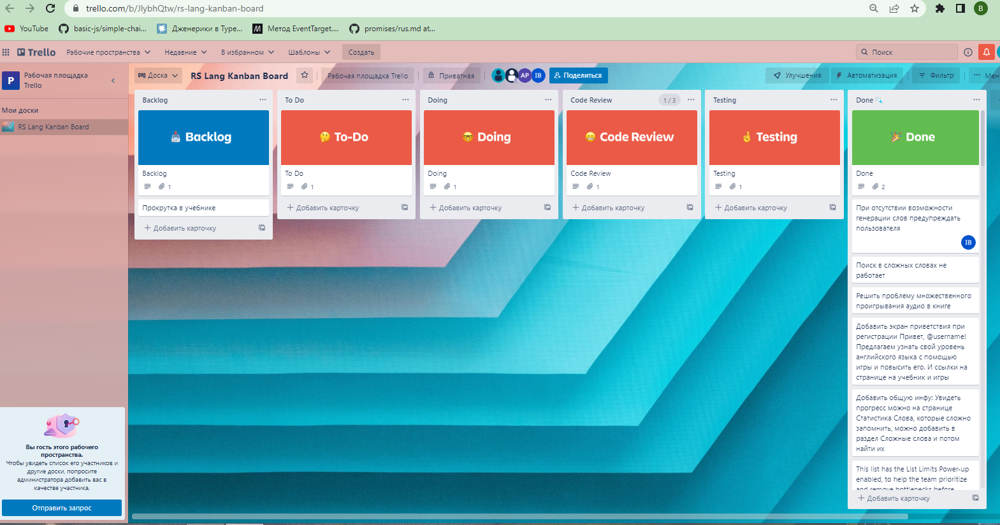

RS-lang
Результат командной работы

Netlify: https://rslang-igorpex.netlify.app/
Наши фичи

Организация командной работы
RACI матрица
| Igor | Vlad | Sasha | |
|---|---|---|---|
| backend; adjust git repository; authorization; sprint game; statistics; | R | I | I |
| design; main page; team page; search ficha; | A | R | I | e-book; audiochallenge game | A | I | R |
Инструменты
Инструменты
Инструменты
Инструменты

Инструменты
Сложности
- Отсутствие возможности работать всем членам команды в одном временном графике
- Отсутствие опыта работы с kanban board
- Сложности с разделением задач между участниками команды
Использовали

- tsconfig с правилами: "noImplicitAny": true, "strict": true

- ts-loader, 'style-loader' etc.
- HtmlWebpackPlugin, CopyWebpackPlugin

- airbnb-base, airbnb-typescript/base

Chart.js
История коммитов
291 коммит
История коммитов
291 коммит

История коммитов
291 коммит
36 pull request
История коммитов
291 коммит
36 pull request
Pull request

Технические сложности
Нехватка времени
Технические сложности
Нехватка времени

Решение
Технические сложности
Реализация возврата в учебник после перехода на страницу игры
Решение
установка в SessionStorage gameRef с указанием источника перехода в игру - в данном случае ebook.
Технические сложности
Возврат на исходную страницу после логина \ регистрации
Технические сложности
Проблема с разным фактическим смысловым значением page для разных запросов
Решение
Запрашивать в игре, как и в учебнике, все слова, включая изученные(+предыдущие страницы), а затем убирать изученные.